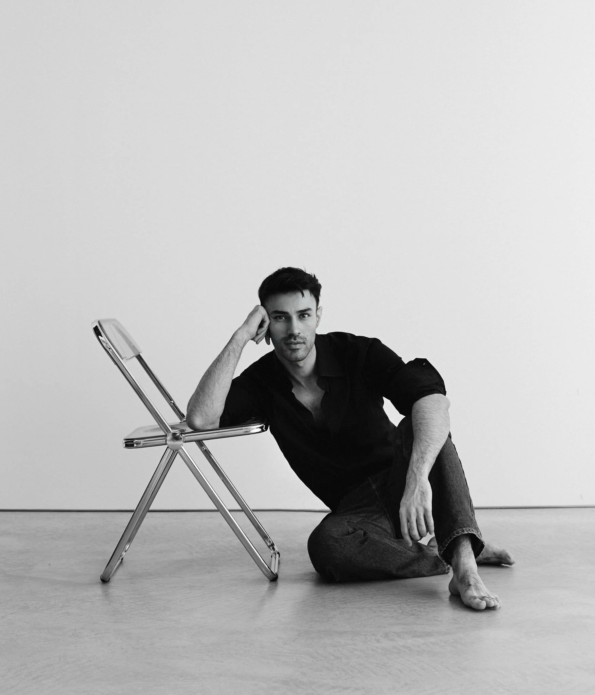

Mohsen Masoudnia
Is an architect and interior designer with a strong foundation in both architectural technology and urban planning. Born in 1992 in Iran, he began his academic journey with a Bachelor’s degree in Technology of Architecture before moving to Italy to complete a Master’s in Architecture and Urban Planning at the Politecnico di Milano.
Following his studies, he collaborated with some architecture and interior design studios in Milan, contributing to a variety of projects and creative initiatives.
Today, he leads his own independent practice, focusing on private architectural and interior design projects across Italy.
His approach is rooted in a comprehensive understanding of spatial design, with a focus on timeless aesthetics, contextual harmony, and meticulous attention to detail.